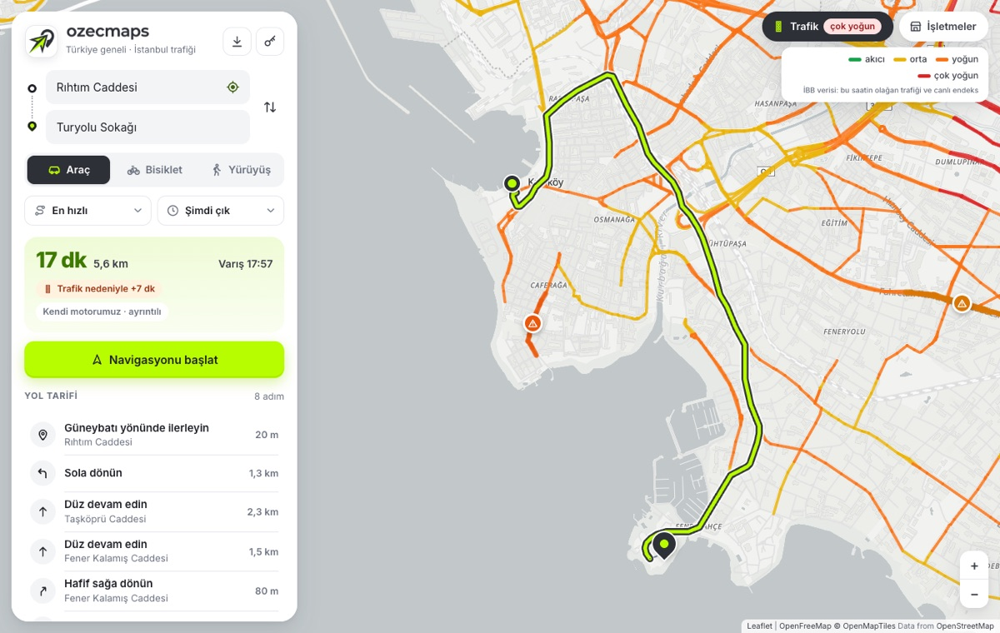

Kendi yazdığımız Java rota motoru Türkiye'nin 3,3 milyon kavşağında en iyi yolu bulur; İstanbul'da İBB'nin trafik verisini hesaba katar ve sizi Türkçe, sesli olarak yönlendirir.
iPhone ve iPad'de: Safari'de Paylaş → Ana Ekrana Ekle ile uygulama gibi kurabilirsiniz.

Edirne'den Van'a 1.761 km'lik rotayı kendi motorumuz 1,5 saniyede bulur.
Saat saat olağan trafik ve İBB'nin canlı endeksi; kalkış saatini de seçebilirsiniz.
Türkçe, adım adım; rotadan çıkınca yeni rotayı hemen hesaplar.
Türkiye'nin her yerinde arama; Kadıköy'de 6.200 işletme haritada.